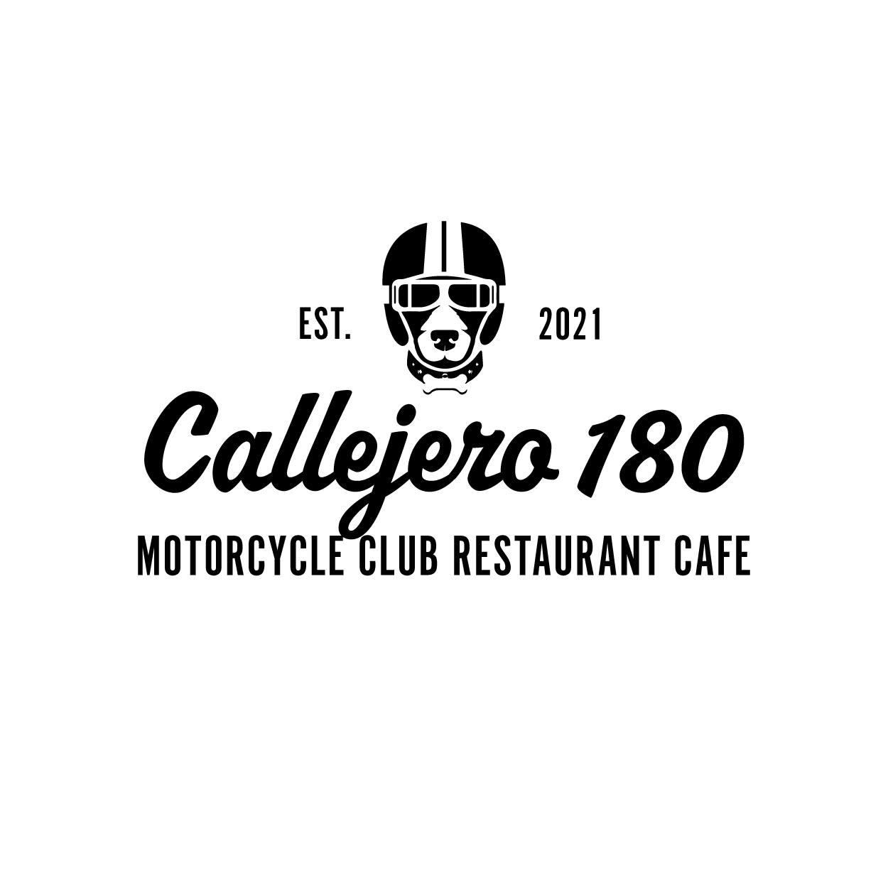

<mat-toolbar color=primary>
    <!--<span>Callejero 180</span>-->
    
    <span class="spacer"></span>
    <a routerLink="main" mat-button>Productos</a>
    <a routerLink="shopping-cart" mat-button [matBadge]="shoppingCart.length" matBadgePosition="after">Carrito</a>
</mat-toolbar>